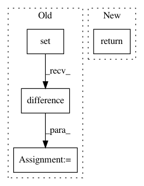

7819724acb0f0e6fd83a3cd9ec6b5b72a9799721,src/python/pants/task/task.py,TaskBase,get_targets,#TaskBase#Any#,226
Before Change
else list(filter(predicate, self.context.target_roots)))
included_targets = TargetFilter.scoped_instance(self).apply(initial_targets)
excluded_targets = set(initial_targets).difference(included_targets)
if excluded_targets:
self.context.log.info("{} target(s) excluded".format(len(excluded_targets)))
for target in excluded_targets:
After Change
if not self.target_filtering_enabled:
return initial_targets
else:
return self._filter_targets(initial_targets)
def _filter_targets(self, targets):
included_targets = TargetFilter.scoped_instance(self).apply(targets)
excluded_targets = set(targets).difference(included_targets)
In pattern: SUPERPATTERN
Frequency: 3
Non-data size: 4
Instances
Project Name: pantsbuild/pants
Commit Name: 7819724acb0f0e6fd83a3cd9ec6b5b72a9799721
Time: 2019-02-26
Author: codealchemy@users.noreply.github.com
File Name: src/python/pants/task/task.py
Class Name: TaskBase
Method Name: get_targets
Project Name: ericmjl/pyjanitor
Commit Name: b5dca485575de7052f2ce8f39ea845e848e1ac89
Time: 2020-12-09
Author: samueloranyeli@gmail.com
File Name: janitor/functions.py
Class Name:
Method Name: fill_direction
Project Name: etal/cnvkit
Commit Name: c034a486630d90544beb2f42cc05e796e2973138
Time: 2015-06-17
Author: eric.talevich@gmail.com
File Name: cnvlib/fix.py
Class Name:
Method Name: match_ref_to_probes